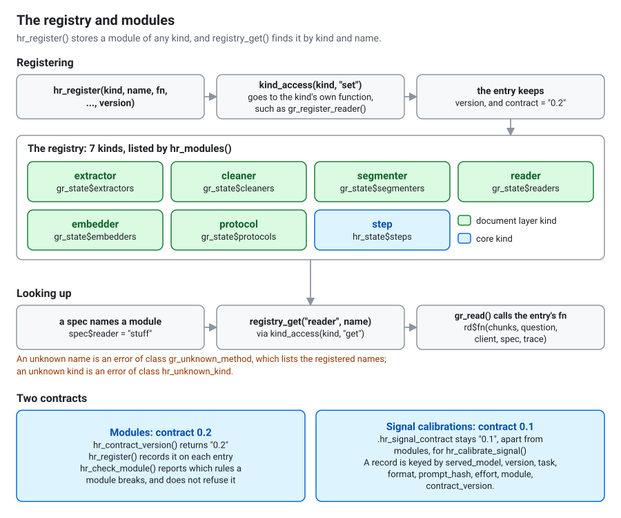

Each axis of harnessr is a registry: extractors and cleaners for ingest, segmenters, readers, embedders, and models. You can list each registry, swap one entry for another, and add your own.
harnessr treats your addition exactly as it treats a built-in. Your
module gets the same token caps, provenance and reporting, and it runs
under the same call and spending limits. You can name it in a recipe,
put it in an ensemble, and compare it against a built-in
with gr_compare().
This guide covers four tasks:
- registering each kind of module;
- declaring the calls and the cost of a module that calls the model;
- stating the parameters of a spec;
- checking your module against the contract the built-ins follow.
A module that calls the model builds on the core. It sends each
request with hr_call() and records it in the run’s trace
(“The trace” in vignette("core")), the run’s limits can
refuse it (“Limits and refusals” in vignette("core")), it
sizes its prompts with hr_budget()
(vignette("context")), and it passes on the run’s effort
(vignette("effort")). Models and their prices belong to the
core too (vignette("models")). Steps register in the same
registry, and “Registering a step” in vignette("compose")
covers them, with hr_modules() across every kind and
hr_check_module() for a module of any kind.
vignette("harnessr") introduces the package.
Setting up
The examples run offline. hr_mock_client() returns a
client whose handler is an ordinary R function. You can pass it anywhere
a real client goes, and it records every prompt it receives. Use it to
check that your module does what you expect before you pay for real
calls. embedder = "lexical" keeps embedding free and
offline too.
library(harnessr)
old <- hr_options(verbose = FALSE, embedder = "lexical")
cl <- hr_mock_client(function(messages, params) "Revenue was 45.2 million dollars.")Getting text in: extractors and cleaners
An extractor turns a file into text blocks. It is a function of
(path, opts) that returns a data frame with a
text column, and optionally page,
section and kind. When you register it with
gr_register_extractor(), you name the file extensions it
claims.
gr_register_extractor("tsv", "tsv", description = "TSV, one block per row",
fn = function(path, opts) {
d <- utils::read.delim(path, stringsAsFactors = FALSE)
data.frame(text = apply(d, 1, paste, collapse = " | "), kind = "table")
})
tsv <- tempfile(fileext = ".tsv")
writeLines(c("region\trevenue", "north\t45.2", "south\t51.8"), tsv)
cat(gr_ingest(tsv)$text)
#> north | 45.2
#>
#> south | 51.8If your extractor cannot turn some pages into text, list them in
attr(result, "gr_unread_pages"). harnessr then marks an
answer drawn from the document as partial, as it does for a PDF page
that needed OCR and did not get it.
A cleaner is a function of (text, opts) that returns
cleaned text. Its stage sets when it runs:
-
"early"steps preserve structure, as boilerplate removal does. -
"late"steps normalise destructively, as digit stripping does.
Early steps always run before late ones, whatever order you list them in.
gr_register_cleaner("drop_confidential", stage = "early",
description = "Remove CONFIDENTIAL banner lines",
fn = function(x, o) gsub("(?mi)^\\s*CONFIDENTIAL.*$", "", x, perl = TRUE))
cleaned <- gr_clean("CONFIDENTIAL - DRAFT\n\nThe real content of the document.",
steps = c("drop_confidential", "collapse_whitespace"))
as.character(cleaned)
#> [1] "The real content of the document."By default a cleaner runs on each text block. A cleaner that looks at
position or repetition across the whole document, such as one that drops
a trailing bibliography or a running head, needs
scope = "document". Run per block, it would never fire.
?gr_register_cleaner explains how harnessr matches its
result back to the blocks. vignette("ingest") covers the
built-in extractors and cleaners.
Cutting text up: segmenters
A segmenter is a function of (doc, spec, client, trace)
that returns a gr_chunks. Build that object with
new_chunks(), because gr_segment() rejects
anything else. The constructor gives your segmenter the same invariants
as the built-ins:
- it drops blank units;
- it assigns
chunk_idin order; - it measures tokens and characters;
- it recycles provenance to match.
gr_register_segmenter("by_bullet", description = "one chunk per bullet",
fn = function(doc, spec, client, trace) {
units <- unlist(strsplit(doc$text, "\n(?=[-*])", perl = TRUE))
new_chunks(units, "by_bullet", spec)
})
subset(gr_segmenters(), name == "by_bullet")
#> name cost needs_client description calls version contract
#> 1 by_bullet free FALSE one chunk per bullet by_bullet <NA> <NA>new_chunks() does not enforce the token cap.
gr_segment() checks the cap after your function returns and
splits anything oversized, so the chunks fit even when your segmenter
ignores spec$max_tokens. The conformance check later in
this guide reports each chunk that gr_segment() had to
split.
Three arguments of gr_register_segmenter() describe what
the segmenter spends:
-
costis"free","embedding"or"llm", so a UI can warn before anything is spent. -
needs_client = TRUEmarks a segmenter that cannot work without a client. When there is no client,gr_segment()warns with classgr_segment_fallback. Your segmenter should then record what it fell back to in itsmethod("mine->paragraph"), so the downgrade shows ingr_chunk_stats(). -
callsdeclares the labels of its model calls, as the next sections describe for readers.character(0)declares that it makes none.
vignette("segment") covers the built-in segmenters.
Reading: readers
A reader is a function of
(chunks, question, client, spec, trace) that returns a
gr_answer, built with new_answer(). This one
answers from the longest chunk only:
gr_register_reader("longest", signature = "one|1|none", cost_calls = "1",
description = "answer from the longest chunk only",
calls = "longest.answer",
cost = function(input_stats, params) hr_cost(calls = 1),
fn = function(chunks, question, client, spec, trace) {
d <- chunks$chunks
i <- which.max(d$tokens)
res <- hr_call(client, list(list(role = "user",
content = paste0(d$text[i], "\n\nQuestion: ", question))),
model = spec$model, effort = spec$effort, trace = trace,
label = "longest.answer")
new_answer(res$text, "longest", question, d$chunk_id[i], trace,
partial = !isTRUE(res$ok))
})
ch <- gr_segment(gr_example(), list(method = "sentence", max_tokens = 120))
gr_read(ch, "What was revenue?", cl, "longest")$answer
#> [1] "Revenue was 45.2 million dollars."Inside the function, chunks$chunks is the data frame of
chunks (chunk_id, text, tokens,
chars, page, section,
block_id). When you write the function:
- Send every request through
hr_call()with the client you were given, never one you construct, and pass it thetrace. Through the trace,hr_call()counts, prices and limits your calls (“The trace” invignette("core")). - Expect refusals. harnessr does not send a request that would pass
max_callsormax_cost_usd, andhr_call()returns a result withrefused = TRUEinstead (“Limits and refusals” invignette("core")). Stop or degrade when that happens. - Honour at least
spec$model,spec$max_answer_tokens,spec$temperatureandspec$effort. - Budget the prompt with
hr_budget()instead of assuming the document fits (“How much room a prompt has:hr_budget()” invignette("context")).
The signature, "select|calls|state",
describes how the reader traverses the chunks. Two readers with the same
signature are the same method under two names. gr_compare()
uses the signature to decide whether two recipes are the same
experiment, and ensemble refuses members that share
one.
A select of "all" declares that the reader
sends every chunk. harnessr then refuses a run whose chunks alone would
cost more than max_cost_usd before its first request.
gr_reader_signature() reports a reader’s signature, so you
can check whether two readers that claim to differ do differ.
cost_calls is a description for people, shown by
gr_readers(); the pre-flight check never reads it.
The name "auto" is reserved, because
answer_document() uses it to choose a recipe.
vignette("readers") covers the built-in readers.
Declaring calls
Every hr_call() carries a label, and the
trace records it in its stage column. A module declares the
stems of its labels in calls. A stem covers a label that
equals it or that starts with it followed by a dot. If you leave
calls out, the module declares its own name, which covers
labels such as "longest.answer" for a reader called
"longest".
gr_read_spec() checks an effort map against
these declarations. Each name in gr_read_spec(effort =)
must be a declared stem, a part of one up to a dot, or a label under
one. Any other name raises an error of class
hr_unknown_effort_key that lists the stems. Without the
check, that setting would silently reach no request:
spec <- gr_read_spec("longest", effort = c(longest = "low"))
spec$effort
#> longest
#> "low"
tryCatch(gr_read_spec("longest", effort = c(longst = "low")),
hr_unknown_effort_key = function(e) "refused: no call is labelled 'longst'")
#> [1] "refused: no call is labelled 'longst'"To name the calls of your own module in an effort map, register the
module first, with its labels in calls. The
calls column of gr_readers() and
gr_segmenters() lists every module’s stems.
vignette("effort") explains what effort does and which
models it is sent to.
Declaring cost
The cost argument of gr_register_reader()
is a function of (input_stats, params) that returns
hr_cost(): how many requests one run makes, expected and at
worst. params is the gr_read_spec().
input_stats holds:
-
n_chunks,tokens(of all chunks),textsandquestion; -
out_cap, the largest reply cap a request toparams$modelis sent; -
embed_api, whether embeddings go to the endpoint at all; - the helpers
reply_cap(model, cap),room(system, restate)andembed_requests(texts).
This reader asks every chunk and then merges the notes, so it makes one request per chunk plus one:
gr_register_reader("each", signature = "all|N+1|none", cost_calls = "N + 1",
description = "ask every chunk, then merge",
calls = c("each.chunk", "each.merge"),
cost = function(input_stats, params) hr_cost(calls = input_stats$n_chunks + 1),
fn = function(chunks, question, client, spec, trace) {
d <- chunks$chunks
notes <- vapply(seq_len(nrow(d)), function(i) {
hr_call(client, list(list(role = "user",
content = paste0(d$text[i], "\n\nQuestion: ", question))),
model = spec$model, effort = spec$effort, trace = trace,
label = "each.chunk")$text
}, character(1))
res <- hr_call(client, list(list(role = "user",
content = paste(c(notes, question), collapse = "\n\n"))),
model = spec$model, effort = spec$effort, trace = trace,
label = "each.merge")
new_answer(res$text, "each", question, d$chunk_id, trace,
partial = !isTRUE(res$ok))
})
a <- gr_read(ch, "What was revenue?", cl, "each")
table(as.data.frame(a$trace)$stage)
#>
#> each.chunk each.merge
#> 6 1Before the first request, gr_read() adds up the cost
functions of a run, and the governor checks the sum against its limits.
Under a cap of three calls, the governor refuses the six chunks above
before anything is sent:
capped <- hr_options(max_calls = 3)
tryCatch(gr_read(ch, "What was revenue?", cl, "each"),
gr_call_cap = function(e) conditionMessage(e))
#> [1] "Reader 'each' over 6 chunks would need about 7 more model calls (0 already made this run), above the 3-call cap. Use a larger `max_tokens` when segmenting (fewer chunks), pick a top-k reader, or raise hr_options(max_calls = ...)."
hr_options(capped)For a reader registered without cost, the pre-flight
check counts one request per chunk and, for a signature whose
select is "all", every chunk sent once.
Declare cost for any reader that makes a different number
of requests.
hr_cost() has more fields than calls:
-
calls_maxis the worst case, never taken as less thancalls. -
tokens_in_maxcounts prompt tokens sent beyond the input itself, such as replies handed on to a merge. -
tokens_out_maxis for a reader whose replies can be billed beyond the reply cap. Without it, the check prices every request atinput_stats$out_cap. -
embed_maxcounts requests to the embeddings endpoint. -
sendslists input every run must send, aslist(tokens =, model =), so the pre-flight check refuses a run that cannot finish under the spending limit before it starts.
hr_cost(calls = 4, calls_max = 6)$calls_max
#> [1] 6“Limits” in vignette("runs") covers the governor, its
limits and the pre-flight step in the trace.
Embedders
Embedders are a registry too. With a local embedder,
retrieve and the semantic segmenter work
offline, for free, and reproducibly:
gr_embedders()
#> name deterministic
#> 1 api FALSE
#> 2 lexical TRUE
#> description version contract
#> 1 Embeddings endpoint on the client's base URL <NA> <NA>
#> 2 Hashed bag-of-words; free, offline, word overlap not meaning <NA> <NA>hr_options(embedder = "lexical") switches every part of
the package that embeds.
An embedder is a function of (texts, params) that
returns a numeric matrix with one row per text. L2-normalise each row,
because harnessr treats the cross-product as cosine similarity
everywhere downstream. params carries client,
model, batch_size, cache and
trace. To signal failure, raise an error; the caller
applies its own fallback.
Register your own embedder (a local model, a company service) and
select it with hr_options(embedder =). The
semantic segmenter and the retrieve and
iterative readers then all use it, with no change to any of
them.
gr_register_embedder("first-letters", description = "Toy: letter counts",
deterministic = TRUE,
fn = function(texts, params) {
t(vapply(texts, function(tx) {
v <- numeric(26)
ltr <- utf8ToInt(tolower(substr(tx, 1, 40))) - 96L
for (i in ltr[ltr >= 1 & ltr <= 26]) v[i] <- v[i] + 1
n <- sqrt(sum(v^2)); if (n == 0) v else v / n
}, numeric(26), USE.NAMES = FALSE))
})
toy <- hr_options(embedder = "first-letters")
attr(hr_embed(cl, c("alpha", "beta")), "embedding_source")
#> [1] "first-letters"
hr_options(toy)Set deterministic = TRUE only if the same text always
gives the same vector, in any session on any machine. A trace records
model calls but not vectors. The flag lets
hr_replay_client() recompute a run’s chunk ranking instead
of degrading to lexical vectors. If you set it wrongly, a replay ranks
chunks from vectors the original run never saw and still reports an
exact match. “Embeddings in a replay” in vignette("runs")
shows what a replay does with each kind of embedder.
Models
The model registry belongs to the core.
hr_register_model() adds a model harnessr does not know,
corrects a built-in entry, or gives a model the prices you pay.
vignette("models") covers each of these and what harnessr
does with a model that has no price. The section on connecting to a
model in vignette("harnessr") registers a hosted model at
its prices and a local one at zero, both reached through ellmer.
Using what you registered
You name a registered module as you name a built-in. A recipe binds
one choice from each axis, and answer_document() runs
it:
mine <- gr_recipe("bullets_longest",
segment = list(method = "by_bullet", max_tokens = 400),
read = list(reader = "longest"))
answer_document(gr_example(), "What was revenue?", recipe = mine,
client = cl)$answer
#> [1] "Revenue was 45.2 million dollars."gr_compare() runs several recipes on one document and
question, sharing one trace, so you can measure your addition against a
built-in on calls, tokens and cost:
cmp <- gr_compare(gr_example(), "What was revenue?",
recipes = list(mine, "fast"), client = cl)
cmp$summary[, c("recipe", "segmenter", "chunks", "reader", "calls")]
#> recipe segmenter chunks reader calls
#> 1 bullets_longest by_bullet 2 longest 1
#> 2 fast paragraph 1 stuff 1Registering any kind with hr_register()
hr_register() registers a module of any kind. Name the
kind first. The other arguments are those of that kind’s own function,
so hr_register("reader", ...) takes what
gr_register_reader() takes and runs the same checks. This
reader answers from the shortest chunk:
shortest <- function(chunks, question, client, spec, trace) {
d <- chunks$chunks
i <- which.min(d$tokens)
res <- hr_call(client, list(
list(role = "user", content = paste0(d$text[i], "\n\nQuestion: ", question))),
model = spec$model, effort = spec$effort, trace = trace,
label = "shortest.answer")
new_answer(res$text, "shortest", question, d$chunk_id[i], trace)
}
hr_register("reader", "shortest", signature = "one|1|none", cost_calls = "1",
description = "answer from the shortest chunk only", calls = "shortest.answer",
fn = shortest)The kinds are "extractor", "cleaner",
"segmenter", "reader",
"embedder", "protocol" and
"step". For any other kind, hr_register()
raises an error of class hr_unknown_kind. It also refuses a
module that the kind’s own function would refuse:
tryCatch(hr_register("reader", "auto", fn = identity, signature = "one|1|none"),
gr_reserved_name = function(e) conditionMessage(e))
#> [1] "'auto' is reserved: answer_document() uses it to choose a recipe. Register the reader under another name."The registry holds the modules of every kind.
hr_register() stores an entry with its version and
contract, and a lookup such as gr_read() finds the entry by
name and calls its function:

hr_modules("reader") lists the readers with the columns
of their kind and the call stems each declares:
r <- hr_modules("reader")
r[r$name %in% c("longest", "shortest"), c("name", "signature", "calls")]
#> name signature calls
#> 6 longest one|1|none longest.answer
#> 13 shortest one|1|none shortest.answerListings such as gr_readers() keep their own columns. A
module you register with hr_register() appears in them as
one registered with the kind’s own function does. Each listing ends with
two more columns:
-
version, the version you gavehr_register(); -
contract, the module contract it was registered under.
A module registered with a gr_register_*() function has
NA in both. Pass version when you register,
and the listings show which version of your module is in place:
hr_register("reader", "shortest", signature = "one|1|none", cost_calls = "1",
description = "answer from the shortest chunk only", calls = "shortest.answer",
version = "1.1.0", fn = shortest)
r <- gr_readers()
r[r$name %in% c("longest", "shortest"), c("name", "version", "contract")]
#> name version contract
#> 6 longest <NA> <NA>
#> 13 shortest 1.1.0 0.2A step from hr_step() registers the same way, under the
kind "step"; “Registering a step” in
vignette("compose") shows it.
Through hr_register(), a segmenter that calls a model
can also take effort_label. It is a function of the segment
spec that returns the label the segmenter’s requests carry, or
"" when the spec sends none. With it, your segmenter
receives only the effort for that label from a run’s effort
map, as the built-in contextual and
proposition segmenters do. Without
effort_label, your segmenter gets the whole map and picks
its own labels from it.
Parameter schemas
Each spec constructor states its parameters once, as a schema: type,
default, range and choices. gr_read_spec(),
gr_segment_spec() and gr_ingest_spec() check
their arguments against a schema. A module of your own can state its
parameters with the same three core functions: hr_param()
declares one, hr_schema() collects them and
hr_validate() applies the rules. “Checking settings” in
vignette("core") shows them, with every type and field.
Checking a module against the contract
gr_check_reader() and gr_check_segmenter()
run one registered module on the bundled example document, through an
offline client, and report which rules of its contract it breaks. In
this release the checks only report. Registering a module does not run
them, and a module that breaks a rule stays registered and runs as
before. Every built-in reader and segmenter passes.
The longest reader above passes all nine reader
rules:
gr_check_reader("longest")
#> <hr_conformance> reader 'longest', contract 0.2
#> passes all 9 rules
#> ok is_function
#> ok runs
#> ok answer_class
#> ok answer_fields
#> ok answer_text
#> ok evidence: no evidence
#> ok chunks_used
#> ok calls_declared: 1 call(s), all under declared stems
#> ok calls_within_cost: 1 request(s) made, at most 1 expectedThis one does not. It sends a call under a label it did not declare, makes two requests where its cost function promised one, and names a chunk that does not exist:
gr_register_reader("loose", signature = "one|2|none", calls = "loose.answer",
cost = function(input_stats, params) hr_cost(calls = 1),
fn = function(chunks, question, client, spec, trace) {
hr_call(client, list(list(role = "user", content = question)),
model = spec$model, trace = trace, label = "other.answer")
res <- hr_call(client, list(list(role = "user", content = question)),
model = spec$model, trace = trace, label = "loose.answer")
new_answer(res$text, "loose", question, 99L, trace)
})
gr_check_reader("loose")
#> <hr_conformance> reader 'loose', contract 0.2
#> fails 3 of 9 rules
#> FAIL chunks_used: chunk id(s) 99 are not in the chunks
#> FAIL calls_declared: label(s) 'other.answer' not under the declared stems loose.answer
#> FAIL calls_within_cost: 2 request(s) made, at most 1 expected
#> ok is_function
#> ok runs
#> ok answer_class
#> ok answer_fields
#> ok answer_text
#> ok evidence: no evidenceThe broken rules print first, each with what the check found. The nine reader rules are:
-
is_function; -
runs: it finishes without an error; -
answer_classandanswer_fields: agr_answerwith every documented field; -
answer_text: a single string; -
evidenceandchunks_used: they name only chunks of the input; -
calls_declared: every label is under a declared stem; -
calls_within_cost: no more requests than the cost function’s worst case, orNAfor a reader registered withoutcost.
The by_bullet segmenter from earlier fails one rule. The
example document has no bullets, so by_bullet returns it as
a single chunk over the 150-token cap the check cuts with, and
gr_segment() has to split it:
gr_check_segmenter("by_bullet")
#> <hr_conformance> segmenter 'by_bullet', contract 0.2
#> fails 1 of 8 rules
#> FAIL within_cap: 1 chunk(s) over the 150-token cap
#> ok is_function
#> ok runs
#> ok chunks_class
#> ok chunk_columns
#> ok chunk_text
#> ok chunk_ids
#> ok calls_declared: no model callsSplitting on blank lines as well as bullets keeps every chunk under the cap:
gr_register_segmenter("by_bullet", description = "one chunk per bullet or paragraph",
fn = function(doc, spec, client, trace) {
units <- unlist(strsplit(doc$text, "\n(?=[-*])|\n\\s*\n", perl = TRUE))
new_chunks(trimws(units), "by_bullet", spec)
})
gr_check_segmenter("by_bullet")
#> <hr_conformance> segmenter 'by_bullet', contract 0.2
#> passes all 8 rules
#> ok is_function
#> ok runs
#> ok chunks_class
#> ok chunk_columns
#> ok chunk_text
#> ok chunk_ids
#> ok within_cap
#> ok calls_declared: no model callsThe segmenter rules are is_function, runs,
chunks_class, chunk_columns (the documented
columns), chunk_text (no blank chunk),
chunk_ids (unique, not NA),
within_cap and calls_declared. The check gives
the offline client to a segmenter that needs a client or declares calls.
Pass client = to check it against another client.
Both checks return an hr_conformance data frame with
rule, ok and detail columns. If
you maintain a package of modules, its tests can assert on that data
frame:
res <- gr_check_reader("loose")
res$rule[!is.na(res$ok) & !res$ok]
#> [1] "chunks_used" "calls_declared" "calls_within_cost"To check a module against a provider that misbehaves, give the check
a mock client with a mode:
-
"bad_json"sends JSON cut off part way. -
"refuse"sends empty replies. -
"at_cap"marks every reply as cut off at the output cap. - A vector of HTTP status codes gives call
ithei-th status, soc(429, 500, 200)fails the first two calls and answers every one after.
The longest reader still finishes, and stays within its
cost, when every request is rate limited:
gr_check_reader("longest", client = hr_mock_client(mode = 429))
#> <hr_conformance> reader 'longest', contract 0.2
#> passes all 9 rules
#> ok is_function
#> ok runs
#> ok answer_class
#> ok answer_fields
#> ok answer_text
#> ok evidence: no evidence
#> ok chunks_used
#> ok calls_declared: 1 call(s), all under declared stems
#> ok calls_within_cost: 1 request(s) made, at most 1 expectedBoth checks use the core helper hr_check_module(), which
checks a module of any kind against rules you write. “Checking a module”
in vignette("compose") covers it.
Next
-
?gr_register_readerand?gr_register_segmenter: the full contract for each, with every argument a module receives. -
?new_chunksand?new_answer: the constructors a segmenter and a reader return. -
vignette("core"):hr_call(), the trace and refusals, which every module that calls the model uses. -
vignette("compose"): registering a step, listing the modules of every kind, and checking a module against rules of your own. -
vignette("context"): budgets, and fitting pieces into one. -
vignette("runs"): limits, the pre-flight check, and replaying a run. -
vignette("effort"): effort, by stage or raised when a stage goes wrong.